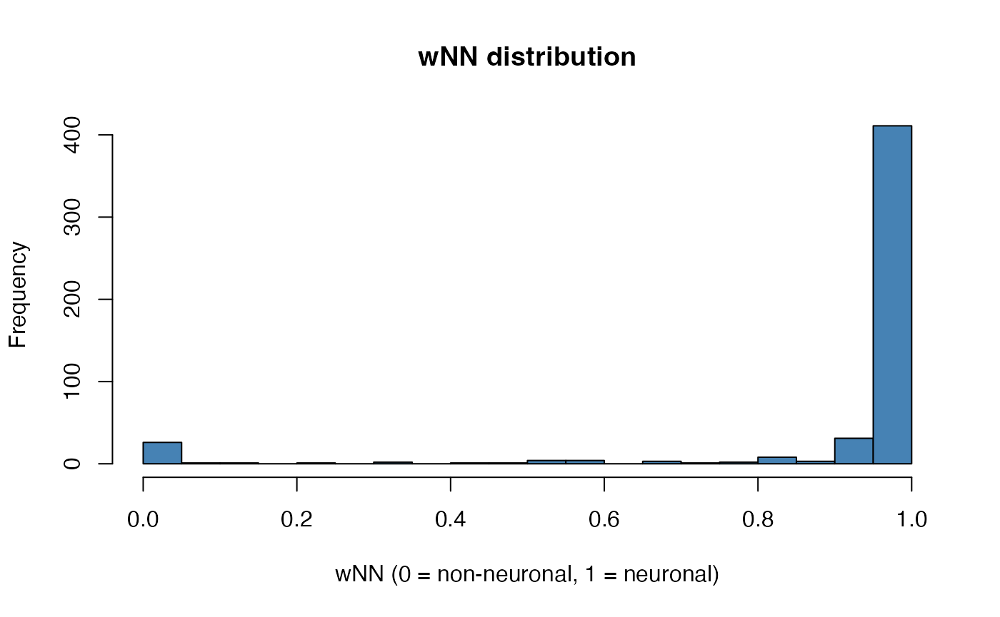

phynd.RmdFunctional MRI signals are contaminated by physiological noise – cardiac pulsation, respiration, and other non-neuronal sources that inflate variance and reduce sensitivity to true neural effects. Traditional approaches require external recordings (pulse oximeter, respiratory belt) or explicit nuisance models, which are not always available.
phynd provides fast, design-free physiological denoising inspired by the PHYCAA+ framework (Churchill et al., 2012, 2013). It automatically separates neuronal from non-neuronal voxels, extracts dynamic noise components from the non-neuronal subspace, and projects them out – all without external physiological recordings or a task design matrix.
The core pipeline runs in seconds on typical fMRI datasets and is implemented with Rcpp/RcppArmadillo for the performance-critical inner loops.
Generate a toy dataset with known physiological and neuronal sources, denoise it in one call, and inspect the result:
set.seed(42)
# Simulate: 500 voxels, 200 time points, 20% non-neuronal
X <- phynd:::simulate_phy_data(n_vox = 500, n_time = 200, nn_frac = 0.20)
# Denoise
result <- fast_phy_denoise(
X, tr = 2.0,
stability = "none",
max_passes = 1
)
# What came back?
names(result)
#> [1] "x_clean" "wNN" "components_selected"
#> [4] "component_table" "tr" "params"
#> [7] "diagnostics"
dim(result$x_clean)
#> [1] 500 200
n_selected <- ncol(result$components_selected)
n_selected
#> [1] 11x_clean is the denoised data matrix in the same
orientation as the input. components_selected holds the
nuisance regressors that were identified and removed. On this simulated
example you should typically see a nonzero selection count. If you see
zero selected components on your own data, try
ratio_thresh = 0.9 or set stability = "none"
during initial exploration.
fast_phy_denoise() proceeds through four stages:
Build a non-neuronal weight map (wNN) – each voxel gets a weight between 0 (likely neuronal) and 1 (likely non-neuronal), based on the energy profile of its temporal differences.
Low-rank SVD – the wNN-weighted data is reduced to a compact subspace via truncated SVD.
Dynamic component extraction – temporal components with high lag-one predictability are extracted. By default this uses a fast canonical autocorrelation (CAA) method; optionally DiCCA or DiPCA can be used instead.
Score and project out – each candidate component is scored by how much variance it explains in non-neuronal versus neuronal voxels. Components with a high NN/NT ratio are identified as physiological noise and regressed out.
Let’s walk through these stages.
The wNN map is also available standalone via
compute_wNN_diff_energy():
wnn_result <- compute_wNN_diff_energy(X)
hist(wnn_result$wNN, breaks = 30, main = "wNN distribution",
xlab = "wNN (0 = non-neuronal, 1 = neuronal)", col = "steelblue")
Voxels near 0 are flagged as non-neuronal (high temporal derivative
energy); voxels near 1 are likely neuronal. The ramp between
delta_nt and delta_nn provides a smooth
transition.
The extractor argument controls which method finds
dynamic components:
"caa" (default) – canonical
autocorrelation, fast and dependency-free."dicca" or
"dipca" – uses the dipca
package for more sophisticated dynamic component analysis. Requires
installing dipca.
result$component_table[, c("component", "ratio_nn_nt", "predictability", "selected")]
#> component ratio_nn_nt predictability selected
#> 1 1 1.3197837 0.005025126 TRUE
#> 2 2 1.7707038 0.005022927 TRUE
#> 3 3 0.5564842 0.005021615 FALSE
#> 4 4 0.8915345 0.005020312 FALSE
#> 5 5 0.7283230 0.005018141 FALSE
#> 6 6 1.2241182 0.005013326 TRUE
#> 7 7 0.6467312 0.005010408 FALSE
#> 8 8 1.4309268 0.005000547 TRUE
#> 9 9 0.4634827 0.004996555 FALSE
#> 10 10 0.3269644 0.004983836 FALSE
#> 11 11 1.0472970 0.004967172 TRUE
#> 12 12 0.7880862 0.004950005 FALSE
#> 13 13 0.9028781 0.004945053 FALSE
#> 14 14 0.5563170 0.004924332 FALSE
#> 15 15 0.7700473 0.004912159 FALSE
#> 16 16 1.2799809 0.004886795 TRUE
#> 17 17 1.1406690 0.004867785 TRUE
#> 18 18 0.6238479 0.004854799 FALSE
#> 19 19 0.5516770 0.004852947 FALSE
#> 20 20 0.8145889 0.004819357 FALSE
#> 21 21 1.3300588 0.004802566 TRUE
#> 22 22 0.8707153 0.004763094 FALSE
#> 23 23 1.0277285 0.004744210 TRUE
#> 24 24 0.5464852 0.004727064 FALSE
#> 25 25 1.2491049 0.004707581 TRUE
#> 26 26 0.7122302 0.004657854 FALSE
#> 27 27 0.5016716 0.004618608 FALSE
#> 28 28 0.6407983 0.004603040 FALSE
#> 29 29 1.1680273 0.004584807 TRUE
#> 30 30 0.8161968 0.004547992 FALSEComponents with ratio_nn_nt above the threshold (default
1.0) are selected as nuisance regressors.
You can verify the denoising effect with
compute_design_free_qc():
qc <- compute_design_free_qc(
x_raw = X,
x_clean = result$x_clean,
wNN = result$wNN,
component_table = result$component_table
)
cat(sprintf("tSNR in neuronal voxels: %.2f -> %.2f\n",
qc$tsnr_nt_before, qc$tsnr_nt_after))
#> tSNR in neuronal voxels: -0.00 -> -0.00
cat(sprintf("NN variance reduction: %.0f%%\n",
qc$nn_variance_reduction_frac * 100))
#> NN variance reduction: 17%Good denoising preserves (or improves) tSNR in neuronal voxels while reducing variance in non-neuronal voxels.
The most important knobs:
| Parameter | Default | Effect |
|---|---|---|
pca_rank |
100 | Dimension of the low-rank subspace. Larger values capture more variance but cost more compute. |
ratio_thresh |
1.0 | NN/NT ratio cutoff. Raise to be more conservative (fewer components removed). |
extractor |
"caa" |
Component extraction method. "dicca" and
"dipca" may be more sensitive but require the
dipca package. |
stability |
"none" |
Set to "half" to enable split-half stability filtering,
which discards components that are not reproducible across data
halves. |
max_passes |
1 | Number of iterative denoising passes. A second pass can catch residual noise. |
svd_engine |
"auto" |
Uses rsvd if available for faster randomized SVD; falls
back to base svd. |
result_strict <- fast_phy_denoise(
X, tr = 2.0,
ratio_thresh = 1.5,
stability = "half",
stability_thresh = 0.3
)
cat(sprintf("Default: %d components removed\n",
ncol(result$components_selected)))
#> Default: 11 components removed
cat(sprintf("Strict: %d components removed\n",
ncol(result_strict$components_selected)))
#> Strict: 0 components removedphynd also provides compcor_denoise(), implementing both
aCompCor and tCompCor as comparison baselines:
cc <- compcor_denoise(X, tr = 2.0, mode = "tcompcorr", n_comp = 5)
qc_cc <- compute_design_free_qc(
x_raw = X,
x_clean = cc$x_clean,
wNN = result$wNN
)
cat(sprintf("tCompCor tSNR (NT): %.2f -> %.2f\n",
qc_cc$tsnr_nt_before, qc_cc$tsnr_nt_after))
#> tCompCor tSNR (NT): -0.00 -> -0.00This lets you compare phynd’s adaptive approach against fixed-rank CompCor on the same data.
When return_diagnostics = TRUE (the default), the result
includes detailed timing information:
result$diagnostics$timings$total_seconds
#> [1] 0.385For systematic benchmarking across data sizes and SVD engines, see
benchmark_fast_phy_denoise().
write_qc_artifact() exports QC summaries for downstream
reporting:
write_qc_artifact(qc, "qc_summary.json")
write_qc_artifact(qc, "qc_summary.csv")
write_qc_artifact(qc, "qc_summary.rds")?fast_phy_denoise – full parameter documentation?compcor_denoise – CompCor baseline details?compute_wNN_diff_energy – standalone wNN map
construction?compute_design_free_qc – QC metric definitionsChurchill, N. W., Yourganov, G., Spring, R., Rasmussen, P. M., Lee, W., Ween, J. E., & Strother, S. C. (2012). PHYCAA: Data-driven measurement and removal of physiological noise in BOLD fMRI. NeuroImage, 59(2), 1299–1314. doi: 10.1016/j.neuroimage.2011.08.021
Churchill, N. W., & Strother, S. C. (2013). PHYCAA+: An optimized, adaptive procedure for measuring and controlling physiological noise in BOLD fMRI. NeuroImage, 82, 306–325. doi: 10.1016/j.neuroimage.2013.05.102